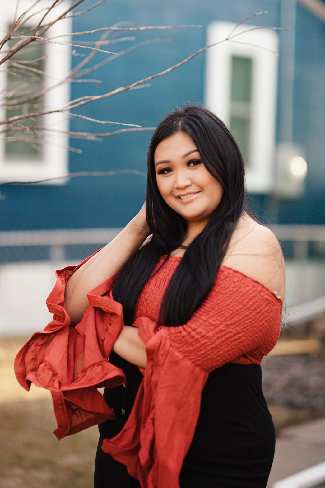

About Me

I am a management information systems (MIS) college student and freelance photographer in Saint Paul, Minnesota. Photography has always been in my blood, since I was a baby. It all started from the influence of my father. He was never a professional photographer but finds the joy in capturing the moments of the ones he loved. In middle school, I was given my first point-and-shoot camera and brought it to school almost every day. I would take a bunch of photos and upload them to Facebook and have been told my Facebook page is many of my former classmates’ source of photos in their tween years. I began to creatively use cameras when I was in admiration of photography when I joined Tumblr and Instagram. While many of my friends utilize these platforms to follow celebrities and influencers, I often search and for other photographers or other visual artists around the world. Almost all my photoshoots were inspired from someone else’s work. The beginning style of my photography were inspired by L.A. based photographers such as Marilyn Hue, Danny Steezy, and Max Thompson. Capturing urban styled fashion and locations were huge elements in what I began shooting on. I bought my first DSLR kit from Canon in my sophomore year of high school and have been shooting with it until the end of 2020. I often took people’s senior photos, birthday themed photoshoots, events such as parties and stage performances, and fashion portraits. After saving up money, I have upgraded to a full frame camera and lens for the investment to become more professional, broaden my camera capabilities and portfolio. I have dreams of working with huge brands, models and celebrities, photographer huge concerts and festivals, and collaborating with fellow photographers in different cities and countries. My aspirations with photography will surely be exciting, but I am more excited to capture moments and bring a smile to everyone’s faces.